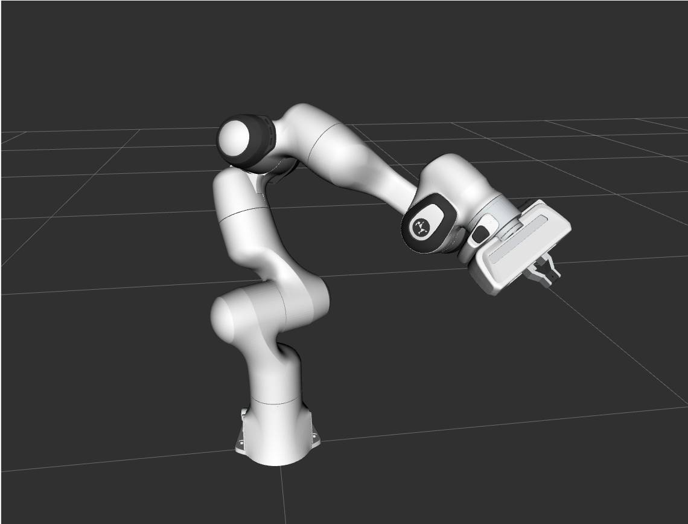
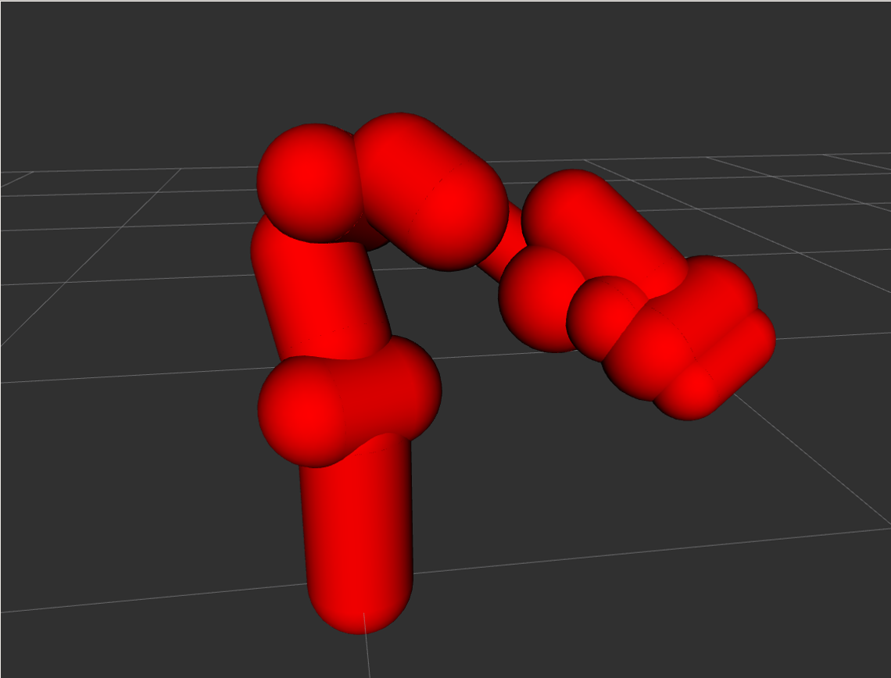

franka_ros
Note
franka_ros is not supported on Windows.
Before continuing with this chapter, please install or compile franka_ros.
You can access the changelog of franka_ros at this link
Schematic overview of the franka_ros packages.
The franka_ros metapackage integrates libfranka into ROS and ROS control.
Here, we introduce its packages and
we also give a short how-to for writing controllers.
All parameters passed to launch files in this section come with default values, so they
can be omitted if using the default network addresses and ROS namespaces.
Make sure the source command was called with the setup script from your workspace:
source /path/to/catkin_ws/devel/setup.sh
franka_description
This package contains the description of our robots and end effectors in terms of kinematics, joint limits, visual surfaces and collision space. The collision space is a simplified version of the visual description used to improve performance of collision checks. The descriptions are based on the URDF format according to the URDF XML documentation .
If you want to simulate the FR3 robots, you can pass a gazebo argument to the XACRO file.
franka_description contains the files for all the Franka Robotics robot models.
xacro $(rospack find franka_description)/robots/fr3/fr3.urdf.xacro gazebo:=true
The same works for FER(Panda):
xacro $(rospack find franka_description)/robots/panda/panda.urdf.xacro gazebo:=true
Collisions Volumes
The URDF defines two types of collision types:
Fine: These collision volumes are made from convex meshes which are approximated and drastically simplified versions of the visual meshes (.dae) of each link. The fine volumes should be used for simulating robot collisions in Gazebo
Coarse: These collision volumes are simply capsules (a cylinder with two semispherical end caps) attached to each link and inflated by a certain safety distance. These volumes are more efficient to compute and are used internally in the robot for self-collision avoidance. Use these geometries when you are planning motions e.g. with MoveIt.
Visual |
Collision (Fine) |
Collision (Coarse) |
|  | 
|
 |
To distinguish between the two types of collision models artificial links are inserted in the URDF
with an *_sc suffix (for self-collision):
You can control which collision model is loaded into your URDF via the gazebo XACRO argument:
xacro ... panda.urdf.xacro gazebo:=false: This will use both the fine and coarse collision model. This is also the default if you omit the arg entirely. Use this when you want to use MoveIt
xacro ... panda.urdf.xacro gazebo:=true: This will use only the fine collision model. Use this when you want a simulatable URDF i.e. for Gazebo. When using the coarse collision model the robot will of course be in constant collision with the capsules of the next link.
franka_gripper
This package implements the franka_gripper_node for interfacing a gripper from ROS.
The node publishes the state of the gripper and offers the following actions servers:
franka_gripper::MoveAction(width, speed): moves to a targetwidthwith the definedspeed.
franka_gripper::GraspAction(width, epsilon_inner, epsilon_outer, speed, force): tries to grasp at the desiredwidthwith a desiredforcewhile closing with the givenspeed. The operation is successful if the distance \(d\) between the gripper fingers is: \(\text{width} - \epsilon_\text{inner} < d < \text{width} + \epsilon_\text{outer}\).
franka_gripper::HomingAction(): homes the gripper and updates the maximum width given the mounted fingers.
franka_gripper::StopAction(): aborts a running action. This can be used to stop applying forces after grasping.
control_msgs::GripperCommandAction(width, max_effort): A standard gripper action recognized by MoveIt!. If the argumentmax_effortis greater than zero, the gripper will try to grasp an object of the desiredwidth. On the other hand, ifmax_effortis zero (\(\text{max_effort} < 1^{-4}\)), the gripper will move to the desiredwidth.Note
Use the argument
max_effortonly when grasping an object, otherwise, the gripper will close ignoring thewidthargument.
You can launch the franka_gripper_node with:
roslaunch franka_gripper franka_gripper.launch robot_ip:=<fci-ip>
Hint
Starting with franka_ros 0.6.0, specifying load_gripper:=true for
roslaunch franka_control franka_control.launch will start a franka_gripper_node as well.
franka_hw
This package contains the hardware abstraction of the robot for the ROS control framework
based on the libfranka API. The hardware class franka_hw::FrankaHW is implemented in this
package offering the following interfaces to controllers:
Interface |
Function |
|---|---|
|
Reads joint states. |
|
Commands joint velocities and reads joint states. |
|
Commands joint positions and reads joint states. |
|
Commands joint-level torques and reads joint states. |
|
Reads the full robot state. |
|
Commands Cartesian poses and reads the full robot state. |
|
Commands Cartesian velocities and reads the full robot state. |
|
Reads the dynamic and kinematic model of the robot. |
To use ROS control interfaces, you have to retrieve resource handles by name:
Interface |
Resource handle name |
|---|---|
|
“<arm_id>_joint1” to “<arm_id>_joint7” |
|
“<arm_id>_joint1” to “<arm_id>_joint7” |
|
“<arm_id>_joint1” to “<arm_id>_joint7” |
|
“<arm_id>_joint1” to “<arm_id>_joint7” |
|
“<arm_id>_robot” |
|
“<arm_id>_robot” |
|
“<arm_id>_robot” |
|
“<arm_id>_robot” |
Hint
By default, <arm_id> is set to “panda”.
The franka_hw::FrankaHW class also implements the starting, stopping and switching of
controllers.
The FrankaHW class also serves as base class for FrankaCombinableHW, a hardware class that
can be combined with others to control multiple robots from a single controller. The combination of
an arbitrary number of Panda robots (number configured by parameters) based on FrankaCombinableHW
for the ROS control framework https://github.com/ros-controls/ros_control is implemented
in FrankaCombinedHW. The key-difference between FrankaHW and FrankaCombinedHW is
that the latter supports torque control only.
Important
The FrankaCombinableHW class is available from version 0.7.0 and allows torque/effort control only.
The ROS parameter server is used to determine at runtime which robots are loaded in the combined
class. For an example on how to configure the FrankaCombinedHW in the according hardware node,
see franka_control.
Note
The approach of FrankaHW is optimal for controlling single robots. Thus we recommend using
the FrankaCombinableHW/FrankaCombinedHW classes only for controlling multiple robots.
The interfaces offered by the FrankaCombinableHW/FrankaCombinedHW classes are the following:
Interface |
Function |
|---|---|
|
Commands joint-level torques and reads joint states. |
|
Reads joint states. |
|
Reads the full robot state. |
|
Reads the dynamic and kinematic model of the robot. |
The only admissible command interface claim is the EffortJointInterface which can be combined
with any set of read-only-interfaces (FrankaModelInterface, JointStateInterface,
FrankaStateInterface). The resource handles offered by all interfaces are claimed by name and
follow the same naming conventions as described for FrankaHW. Every instance of
FrankaCombinableHW offers the complete set of service and action interfaces
(see franka_control).
Note
The FrankaCombinedHW class offers an additional action server in the control node namespace
to recover all robots. If a reflex or error occurs on any of the robots, the control loop of all
robots stops until they are recovered.
Important
FrankaHW makes use of the ROS joint_limits_interface
to enforce position, velocity and effort safety limits.
The utilized interfaces are listed below:
joint_limits_interface::PositionJointSoftLimitsInterface
joint_limits_interface::VelocityJointSoftLimitsInterface
joint_limits_interface::EffortJointSoftLimitsInterface
Approaching the limits will result in the (unannounced) modification of the commands.
franka_control
The ROS nodes franka_control_node and franka_combined_control_node are hardware nodes
for ROS control that use according hardware classes from franka_hw. They provide a variety
of ROS services to expose the full libfranka API in the ROS ecosystem. The following services
are provided:
franka_msgs::SetJointImpedancespecifies joint stiffness for the internal controller (damping is automatically derived from the stiffness).
franka_msgs::SetCartesianImpedancespecifies Cartesian stiffness for the internal controller (damping is automatically derived from the stiffness).
franka_msgs::SetEEFramespecifies the transformation from <arm_id>_EE (end effector) to <arm_id>_NE (nominal end effector) frame. The transformation from flange to end effector frame is split into two transformations: <arm_id>_EE to <arm_id>_NE frame and <arm_id>_NE to <arm_id>_link8 frame. The transformation from <arm_id>_NE to <arm_id>_link8 frame can only be set through the administrator’s interface.
franka_msgs::SetKFramespecifies the transformation from <arm_id>_K to <arm_id>_EE frame.
franka_msgs::SetForceTorqueCollisionBehaviorsets thresholds for external Cartesian wrenches to configure the collision reflex.
franka_msgs::SetFullCollisionBehaviorsets thresholds for external forces on Cartesian and joint level to configure the collision reflex.
franka_msgs::SetLoadsets an external load to compensate (e.g. of a grasped object).
std_srvs::Triggerservices allow to connect and disconnect your hardware node (available from 0.8.0). When no active (commanding) controller is running, you can disconnect the hardware node, freeing the respective robots for non-fci applications like e.g. Desk-based operations. Once you want to resume fci operations you can call connect and start your ros_control based controllers again.
Important
The <arm_id>_EE frame denotes the part of the configurable end effector frame which can be adjusted during run time through franka_ros. The <arm_id>_K frame marks the center of the internal Cartesian impedance. It also serves as a reference frame for external wrenches. Neither the <arm_id>_EE nor the <arm_id>_K are contained in the URDF as they can be changed at run time. By default, <arm_id> is set to “panda”.
Overview of the end-effector frames.
To recover from errors and reflexes when the robot is in reflex mode, you can utilize the
franka_msgs::ErrorRecoveryAction. This can be achieved through either an action client or by publishing on the
action goal topic.
rostopic pub -1 /franka_control/error_recovery/goal franka_msgs/ErrorRecoveryActionGoal "{}"
After recovery, the franka_control_node restarts the controllers that were running. That is
possible as the node does not die when robot reflexes are triggered or when errors have occurred.
All of these functionalities are provided by the franka_control_node which can be launched
with the following command:
roslaunch franka_control franka_control.launch \
robot_ip:=<fci-ip> # mandatory \
load_gripper:=<true|false> # default: true \
robot:=<panda|fr3> # default: panda
Besides loading the franka_control_node, the launch file also starts a
franka_control::FrankaStateController for reading and publishing the robot states, including
external wrenches, configurable transforms and the joint states required for visualization with
rviz. For visualization purposes, a robot_state_publisher is started.
This package also implements the franka_combined_control_node, a hardware node for ros_control based
on the franka_hw::FrankaCombinedHW class. The set of robots loaded are configured via the ROS parameter
server. These parameters have to be in the hardware node’s namespace (see franka_combined_control_node.yaml
as a reference) and look like this:
robot_hardware:
- panda_1
- panda_2
# (...)
panda_1:
type: franka_hw/FrankaCombinableHW
arm_id: panda_1
joint_names:
- panda_1_joint1
- panda_1_joint2
- panda_1_joint3
- panda_1_joint4
- panda_1_joint5
- panda_1_joint6
- panda_1_joint7
# Configure the threshold angle for printing joint limit warnings.
joint_limit_warning_threshold: 0.1 # [rad]
# Activate rate limiter? [true|false]
rate_limiting: true
# Cutoff frequency of the low-pass filter. Set to >= 1000 to deactivate.
cutoff_frequency: 1000
# Internal controller for motion generators [joint_impedance|cartesian_impedance]
internal_controller: joint_impedance
# Configure the initial defaults for the collision behavior reflexes.
collision_config:
lower_torque_thresholds_acceleration: [20.0, 20.0, 18.0, 18.0, 16.0, 14.0, 12.0] # [Nm]
upper_torque_thresholds_acceleration: [20.0, 20.0, 18.0, 18.0, 16.0, 14.0, 12.0] # [Nm]
lower_torque_thresholds_nominal: [20.0, 20.0, 18.0, 18.0, 16.0, 14.0, 12.0] # [Nm]
upper_torque_thresholds_nominal: [20.0, 20.0, 18.0, 18.0, 16.0, 14.0, 12.0] # [Nm]
lower_force_thresholds_acceleration: [20.0, 20.0, 20.0, 25.0, 25.0, 25.0] # [N, N, N, Nm, Nm, Nm]
upper_force_thresholds_acceleration: [20.0, 20.0, 20.0, 25.0, 25.0, 25.0] # [N, N, N, Nm, Nm, Nm]
lower_force_thresholds_nominal: [20.0, 20.0, 20.0, 25.0, 25.0, 25.0] # [N, N, N, Nm, Nm, Nm]
upper_force_thresholds_nominal: [20.0, 20.0, 20.0, 25.0, 25.0, 25.0] # [N, N, N, Nm, Nm, Nm]
panda_2:
type: franka_hw/FrankaCombinableHW
arm_id: panda_2
joint_names:
- panda_2_joint1
- panda_2_joint2
- panda_2_joint3
- panda_2_joint4
- panda_2_joint5
- panda_2_joint6
- panda_2_joint7
# Configure the threshold angle for printing joint limit warnings.
joint_limit_warning_threshold: 0.1 # [rad]
# Activate rate limiter? [true|false]
rate_limiting: true
# Cutoff frequency of the low-pass filter. Set to >= 1000 to deactivate.
cutoff_frequency: 1000
# Internal controller for motion generators [joint_impedance|cartesian_impedance]
internal_controller: joint_impedance
# Configure the initial defaults for the collision behavior reflexes.
collision_config:
lower_torque_thresholds_acceleration: [20.0, 20.0, 18.0, 18.0, 16.0, 14.0, 12.0] # [Nm]
upper_torque_thresholds_acceleration: [20.0, 20.0, 18.0, 18.0, 16.0, 14.0, 12.0] # [Nm]
lower_torque_thresholds_nominal: [20.0, 20.0, 18.0, 18.0, 16.0, 14.0, 12.0] # [Nm]
upper_torque_thresholds_nominal: [20.0, 20.0, 18.0, 18.0, 16.0, 14.0, 12.0] # [Nm]
lower_force_thresholds_acceleration: [20.0, 20.0, 20.0, 25.0, 25.0, 25.0] # [N, N, N, Nm, Nm, Nm]
upper_force_thresholds_acceleration: [20.0, 20.0, 20.0, 25.0, 25.0, 25.0] # [N, N, N, Nm, Nm, Nm]
lower_force_thresholds_nominal: [20.0, 20.0, 20.0, 25.0, 25.0, 25.0] # [N, N, N, Nm, Nm, Nm]
upper_force_thresholds_nominal: [20.0, 20.0, 20.0, 25.0, 25.0, 25.0] # [N, N, N, Nm, Nm, Nm]
# (+ more robots ...)
Note
Be sure to choose unique and consistent arm_id parameters. The IDs must match the prefixes
in the joint names and should be according to the robot description loaded to the control
node’s namespace.
For more information on the parameter based loading of hardware classes, please refer to the
official documentation of combined_robot_hw::CombinedRobotHW from
https://github.com/ros-controls/ros_control.
A second important parameter file (see franka_ros/franka_control/config/default_combined_controllers.yaml as a reference) configures a set of default controllers that can be started with the hardware node. The controllers have to match the launched hardware. The provided default parameterization (here for 2 robots) looks like:
panda_1_state_controller:
type: franka_control/FrankaStateController
arm_id: panda_1
joint_names:
- panda_1_joint1
- panda_1_joint2
- panda_1_joint3
- panda_1_joint4
- panda_1_joint5
- panda_1_joint6
- panda_1_joint7
publish_rate: 30 # [Hz]
panda_2_state_controller:
type: franka_control/FrankaStateController
arm_id: panda_2
joint_names:
- panda_2_joint1
- panda_2_joint2
- panda_2_joint3
- panda_2_joint4
- panda_2_joint5
- panda_2_joint6
- panda_2_joint7
publish_rate: 30 # [Hz]
# (+ more controllers ...)
We provide a launch file to run the franka_combined_control_node with user specified configuration
files for hardware and controllers which default to a configuration with 2 robots. Launch it with:
roslaunch franka_control franka_combined_control.launch \
robot_ips:=<your_robot_ips_as_a_map> # mandatory
robot:=<path_to_your_robot_description> \
args:=<xacro_args_passed_to_the_robot_description> \ # if needed
robot_id:=<name_of_your_multi_robot_setup> \
hw_config_file:=<path_to_your_hw_config_file>\ # includes the robot ips!
controllers_file:=<path_to_your_default_controller_parameterization>\
controllers_to_start:=<list_of_default_controllers_to_start>\
joint_states_source_list:=<list_of_sources_to_fuse_a_complete_joint_states_topic>
This launch file can be parameterized to run an arbitrary number of robots. To do so just write your own configuration files in the style of franka_control/config/franka_combined_control_node.yaml and franka_ros/franka_control/config/default_combined_controllers.yaml.
Important
Be sure to pass the correct IPs of your robots to franka_combined_control.launch as a map. This looks like: {<arm_id_1>/robot_ip: <my_ip_1>, <arm_id_2>/robot_ip: <my_ip_2>, …}
franka_visualization
This package contains publishers that connect to a robot and publish the robot and gripper joint states for visualization in RViz. To run this package launch:
roslaunch franka_visualization franka_visualization.launch robot_ip:=<fci-ip> \
load_gripper:=<true|false> robot:=<panda|fr3>
This is purely for visualization - no commands are sent to the robot. It can be useful to check the connection to the robot.
Important
Only one instance of a franka::Robot can connect to the robot. This means, that for example
the franka_joint_state_publisher cannot run in parallel to the franka_control_node.
This also implies that you cannot execute the visualization example alongside a separate
program running a controller.
franka_example_controllers
In this package a set of example controllers for controlling the robot via ROS are implemented.
The controllers depict the variety of interfaces offered by the franka_hw::FrankaHW class and
the according usage. Each example comes with a separate stand-alone launch file that starts the
controller on the robot and visualizes it.
To launch the joint impedance example, execute the following command:
roslaunch franka_example_controllers joint_impedance_example_controller.launch \
robot_ip:=<fci-ip> load_gripper:=<true|false> robot:=<panda|fr3>
Other single Panda examples are started in the same way.
The dual_arm_cartesian_impedance_example_controller showcases the control of two Panda robots
based on FrankaCombinedHW using one realtime controller for fulfilling Cartesian tasks with
an impedance-based control approach. The example controller can be launched with
roslaunch franka_example_controllers \
dual_arm_cartesian_impedance_example_controller.launch \
robot_id:=<name_of_the_2_arm_setup> \
robot_ips:=<your_robot_ips_as_a_map> \
rviz:=<true/false> rqt:=<true/false>
The example assumes a robot configuration according to dual_panda_example.urdf.xacro where two Pandas are mounted at 1 meter distance on top of a box. Feel free to replace this robot description with one that matches your setup. The option rviz allows to choose whether a visualization should be launched. With rqt the user can choose to launch an rqt-gui which allows an online adaption of the rendered end-effector impedances at runtime via dynamic reconfigure.
franka_gazebo
This package allows you to simulate our robot in Gazebo. This is possible because Gazebo is able to integrate into the ROS control framework with the gazebo_ros package.
Important
This package is available from 0.8.0
Pick & Place Example
Let’s dive in and simulate transporting a stone from A to B. Run the following command to start Gazebo with a Panda and an example world.
roslaunch franka_gazebo panda.launch x:=-0.5 \
world:=$(rospack find franka_gazebo)/world/stone.sdf \
controller:=cartesian_impedance_example_controller \
rviz:=true
This will bring up the Gazebo GUI where you see the environment with the stone and RViz with which you can control the end-effector pose of the robot.
Gazebo GUI (left) and RViz (right) of the pick and place example
To open the gripper, simply send a goal to the move action, similar to how the real franka_gripper
works. Let’s move the gripper to a width of \(8\:cm\) between the fingers with \(10\:\frac{cm}{s}\):
rostopic pub --once /franka_gripper/move/goal franka_gripper/MoveActionGoal "goal: { width: 0.08, speed: 0.1 }"
Since we launched our robot with the Cartesian Impedance controller from franka_example_controllers, we can move the end-effector around, just like in reality, with the interactive marker gizmo in RViz. Move the robot such that the white stone is between the fingers of the gripper ready to be picked up.
Note
If the robot moves strangely with the elbow, this is because the default nullspace stiffness of the cartesian
impedance example controller is set to low. Launch Dynamic Reconfigure
and adjust panda > cartesian_impedance_example_controller > nullspace_stiffness if necessary.
To pick up the object, we use the grasp action this time, since we want to excerpt a force after
the grasp to not drop the object. The stone is around \(3\:cm\) wide and \(50\:g\) heavy.
Let’s grasp it with \(5\:N\):
rostopic pub --once /franka_gripper/grasp/goal \
franka_gripper/GraspActionGoal \
"goal: { width: 0.03, epsilon:{ inner: 0.005, outer: 0.005 }, speed: 0.1, force: 5.0}"
Note
In top menu of Gazebo go to View > Contacts to visualize contact points and forces
If the grasp succeeded, the fingers will now hold the stone in place. If not, probably the goal tolerances (inner and outer epsilon) were too small and the action failed. Now move the object gently over to the red dropoff area.
Transport the stone from blue to red
After you placed it gently on the red pad, stop the grasp with the stop action from the gripper:
rostopic pub --once /franka_gripper/stop/goal franka_gripper/StopActionGoal {}
Note that the contact forces disappear now, since no force is applied anymore. Alternatively you can also use
the move action.
Customization
The launch file from franka_gazebo takes a lot of arguments with which you can customize the behavior
of the simulation. For example to spawn two pandas in one simulation you can use the following:
<?xml version="1.0"?>
<launch>
<include file="$(find gazebo_ros)/launch/empty_world.launch" >
<!-- Start paused, simulation will be started, when Pandas were loaded -->
<arg name="paused" value="true"/>
<arg name="use_sim_time" value="true"/>
</include>
<group ns="panda_1">
<include file="$(find franka_gazebo)/launch/panda.launch">
<arg name="arm_id" value="panda_1" />
<arg name="y" value="-0.5" />
<arg name="controller" value="cartesian_impedance_example_controller" />
<arg name="rviz" value="false" />
<arg name="gazebo" value="false" />
<arg name="paused" value="true" />
</include>
</group>
<group ns="panda_2">
<include file="$(find franka_gazebo)/launch/panda.launch">
<arg name="arm_id" value="panda_2" />
<arg name="y" value="0.5" />
<arg name="controller" value="force_example_controller" />
<arg name="rviz" value="false" />
<arg name="gazebo" value="false" />
<arg name="paused" value="false" />
</include>
</group>
</launch>
Note
To see which arguments are supported use: roslaunch franka_gazebo panda.launch --ros-args
FrankaHWSim
By default Gazebo ROS can only simulate joints with “standard” hardware interfaces like Joint State Interfaces
and Joint Command Interfaces. However our robot is quite different from this architecture! Next to
these joint-specific interfaces it also supports robot-specific interfaces like the FrankaModelInterface (see
franka_hw). Naturally gazebo does not understand these custom hardware interfaces by default.
This is where the FrankaHWSim plugin comes in.
To make your robot capable of supporting Franka interfaces, simply declare a custom robotSimType in your URDF:
<gazebo>
<plugin name="gazebo_ros_control" filename="libgazebo_ros_control.so">
<robotNamespace>${arm_id}</robotNamespace>
<controlPeriod>0.001</controlPeriod>
<robotSimType>franka_gazebo/FrankaHWSim</robotSimType>
</plugin>
<self_collide>true</self_collide>
</gazebo>
When you spawn this robot with the model spawner this plugin will be loaded into the gazebo node. It will scan your URDF and try to find supported hardware interfaces. Up to now only some of the interfaces provided by franka_hw are supported:
Interface |
Function |
|
|---|---|---|
✔ |
|
Reads joint states. |
✔ |
|
Commands joint-level torques and reads joint states. |
✔ |
|
Commands joint velocities and reads joint states. |
✔ |
|
Commands joint positions and reads joint states. |
✔ |
|
Reads the full robot state. |
✔ |
|
Reads the dynamic and kinematic model of the robot. |
✘ |
|
Commands Cartesian poses and reads the full robot state. |
✘ |
|
Commands Cartesian velocities and reads the full robot state. |
Important
This implies that you can only simulate controllers, that claim these supported interfaces and none other!
For example the Cartesian Impedance Example Controller can be simulated, because it only requires the
EffortJoint-, FrankaState- and FrankaModelInterface. However the Joint Impedance Example Controller
can’t be simulated, because it requires the FrankaPoseCartesianInterface which is not supported yet.
Next to the realtime hardware interfaces the FrankaHWSim plugin supports some of the non-realtime commands
that franka_control supports:
Service / Type |
Explanation |
|
|---|---|---|
✘ |
|
Gazebo does not simulate an internal impedance controller, but sets commanded torques directly |
✘ |
|
Gazebo does not simulate an internal impedance controller, but sets commanded torques directly |
✔ |
|
Sets the \({}^{\mathrm{NE}}\mathbf{T}_{\mathrm{EE}}\)
i.e. the homogenous transformation from nominal end-effector
to end-effector. You can also initialize this by setting the
ROS parameter |
✔ |
|
Sets the \({}^{\mathrm{EE}}\mathbf{T}_{\mathrm{K}}\) i.e. the homogenous transformation from end-effector to stiffness frame. |
✔ |
|
Sets thresholds above which external wrenches are treated as contacts and collisions. |
✘ |
|
Not yet implemented |
✔ |
|
Sets an external load to compensate its gravity for, e.g. of
a grasped object. You can also initialize this by setting
the ROS parameters |
✔ |
|
This is a special service only available in |
FrankaGripperSim
This plugin simulates the franka_gripper_node in Gazebo. This is done as a ROS controller for the two finger joints with a position & force controller. It offers the same five actions like the real gripper node:
/<arm_id>/franka_gripper/homing/<arm_id>/franka_gripper/stop/<arm_id>/franka_gripper/move/<arm_id>/franka_gripper/grasp/<arm_id>/franka_gripper/gripper_action
Important
The grasp action has a bug, that it will not succeed nor abort if the target width
lets the fingers open. This is because of missing the joint limits interface which
lets the finger oscillate at their limits. For now only use the grasp action to close
the fingers!
It is assumed that the URDF contains two finger joints which can be force controlled, i.e. have a corresponding
EffortJointInterface transmission declared. This controller expects the following parameters in its namespace:
type(string, required): Should befranka_gazebo/FrankaGripperSimarm_id(string, required): The arm id of the panda, to infer the name of the finger jointsfinger1/gains/p(double, required): The proportional gain for the position-force controller of the first fingerfinger1/gains/i(double, default: 0): The integral gain for the position-force controller of the first fingerfinger1/gains/d(double, default: 0): The differential gain for the position-force controller of the first fingerfinger2/gains/p(double, required): The proportional gain for the position-force controller of the second fingerfinger2/gains/i(double, default: 0): The integral gain for the position-force controller of the second fingerfinger2/gains/d(double, default: 0): The differential gain for the position-force controller of the second fingermove/width_tolerance(double, default \(5\:mm\)): The move action succeeds, when the finger width becomes below this thresholdgrasp/resting_threshold(double, default \(1\:\frac{mm}{s}\)): Below which speed the target width should be checked to abort or succeed the grasp actiongrasp/consecutive_samples(double, default: 3): How many times the speed has to be consecutively belowresting_thresholdbefore the grasping will be evaluatedgripper_action/width_tolerance(double, default \(5\:mm\)): The gripper action succeeds, when the finger width becomes below this thresholdgripper_action/speed(double, default \(10\:\frac{cm}{s}\)): The speed to use during the gripper action
JointStateInterface
To be able to access the joint state interface from a ROS controller you only have to declare the corresponding joint in any transmission tag in the URDF. Then a joint state interface will be automatically available. Usually you declare transmission tags for command interfaces like the EffortJointInterface.
Note
For any joint named <arm_id>_jointN (with N as integer) FrankaHWSim will automatically compensate its gravity
to mimic the behavior of libfranka.
EffortJointInterface
To be able to send effort commands from your controller to a joint, you simply declare a transmission tag for the joint in your URDF with the corresponding hardware interface type:
<transmission name="${joint}_transmission">
<type>transmission_interface/SimpleTransmission</type>
<joint name="${joint}">
<hardwareInterface>hardware_interface/EffortJointInterface</hardwareInterface>
</joint>
<actuator name="${joint}_motor">
<hardwareInterface>${transmission}</hardwareInterface>
</actuator>
</transmission>
<gazebo reference="${joint}">
<!-- Needed for ODE to output external wrenches on joints -->
<provideFeedback>true</provideFeedback>
</gazebo>
Note
If you want to be able to read external forces or torques, which come e.g. from collisions, make sure to set the
<provideFeedback> tag to true.
FrankaStateInterface
This is a robot-specific interface and thus a bit different from the normal hardware interfaces. To be able to access the franka state interface from your controller declare the following transmission tag with all seven joints in your URDF:
<transmission name="${arm_id}_franka_state">
<type>franka_hw/FrankaStateInterface</type>
<joint name="${arm_id}_joint1"><hardwareInterface>franka_hw/FrankaStateInterface</hardwareInterface></joint>
<joint name="${arm_id}_joint2"><hardwareInterface>franka_hw/FrankaStateInterface</hardwareInterface></joint>
<joint name="${arm_id}_joint3"><hardwareInterface>franka_hw/FrankaStateInterface</hardwareInterface></joint>
<joint name="${arm_id}_joint4"><hardwareInterface>franka_hw/FrankaStateInterface</hardwareInterface></joint>
<joint name="${arm_id}_joint5"><hardwareInterface>franka_hw/FrankaStateInterface</hardwareInterface></joint>
<joint name="${arm_id}_joint6"><hardwareInterface>franka_hw/FrankaStateInterface</hardwareInterface></joint>
<joint name="${arm_id}_joint7"><hardwareInterface>franka_hw/FrankaStateInterface</hardwareInterface></joint>
<actuator name="${arm_id}_motor1"><hardwareInterface>franka_hw/FrankaStateInterface</hardwareInterface></actuator>
<actuator name="${arm_id}_motor2"><hardwareInterface>franka_hw/FrankaStateInterface</hardwareInterface></actuator>
<actuator name="${arm_id}_motor3"><hardwareInterface>franka_hw/FrankaStateInterface</hardwareInterface></actuator>
<actuator name="${arm_id}_motor4"><hardwareInterface>franka_hw/FrankaStateInterface</hardwareInterface></actuator>
<actuator name="${arm_id}_motor5"><hardwareInterface>franka_hw/FrankaStateInterface</hardwareInterface></actuator>
<actuator name="${arm_id}_motor6"><hardwareInterface>franka_hw/FrankaStateInterface</hardwareInterface></actuator>
<actuator name="${arm_id}_motor7"><hardwareInterface>franka_hw/FrankaStateInterface</hardwareInterface></actuator>
</transmission>
When your controller accesses the RobotState via the FrankaStateInterface it can
expect the following values to be simulated:
Field |
Comment |
|
|---|---|---|
✔ |
|
|
✘ |
|
Motion generation not yet supported, field will contain only zeros |
✔ |
|
Can be configured via parameters |
✔ |
|
Can be configured via parameter |
✔ |
|
Can be configured via parameter |
✔ |
|
Will be set from the mass in the inertial tag of URDF, if a hand can
be found, otherwise zero. Can be overwritten by parameter |
✔ |
|
Will be set from the inertia in the inertial tag of URDF, if a hand
be found, otherwise zero. Can be overwritten by parameter |
✔ |
|
Will be set from the origin in the inertial tag of URDF, if a hand can
be found, otherwise zero. Can be overwritten by parameter |
✔ |
|
Can be configured via parameter |
✔ |
|
Can be configured via parameter |
✔ |
|
Can be configured via parameter |
✔ |
|
|
✔ |
|
|
✔ |
|
|
✘ |
|
|
✘ |
|
|
✘ |
|
|
✘ |
|
|
✘ |
|
|
✔ |
|
Comes directly from Gazebo |
✔ |
|
The values send by your effort controller. Zero otherwise. |
✔ |
|
Numerical derivative of |
✔ |
|
Comes directly from Gazebo |
✔ |
|
The last commanded joint position when using the position interface.
Same as |
✔ |
|
Comes directly from Gazebo |
✔ |
|
The last commanded joint velocity when using the velocity interface.
Same as |
✔ |
|
Current acceleration when using the position or velocity interface. However, the value will be zero when using the effort interface. |
✔ |
|
\(\mid \hat{\tau}_{ext} \mid > \mathrm{thresh}_{lower}\) where the
threshold can be set by calling |
✔ |
|
\(\mid \hat{\tau}_{ext} \mid > \mathrm{thresh}_{upper}\) where the
threshold can be set by calling |
✔ |
|
\(\mid {}^K \hat{F}_{K,ext} \mid > \mathrm{thresh}_{lower}\) where
threshold can be set by calling |
✔ |
|
\(\mid {}^K \hat{F}_{K,ext} \mid > \mathrm{thresh}_{upper}\) where
threshold can be set by calling |
✔ |
|
\(\hat{\tau}_{ext}\) i.e. estimated external torques and forces at the end-effector, filtered with a exponential moving average filter (EMA). This filtering \(\alpha\) can be configured via a ROS parameter. This field does not contain any gravity, i.e. \(\tau_{ext} = \tau_J - \tau_{J_d} - \tau_{gravity}\) |
✔ |
|
\({}^O\hat{F}_{K,ext} = J_O^{\top +} \cdot \hat{\tau}_{ext}\) |
✔ |
|
\({}^K\hat{F}_{K,ext} = J_K^{\top +} \cdot \hat{\tau}_{ext}\) |
✘ |
|
|
✔ |
|
Will be the same as the |
✘ |
|
|
✘ |
|
|
✘ |
|
|
✔ |
|
Same as |
✔ |
|
Same as |
✘ |
|
Will entirely be false, reflex system not yet implemented |
✘ |
|
Will entirely be false, reflex system not yet implemented |
✔ |
|
Always 1.0 |
✘ |
|
Robot mode switches and reflex system not yet implemented |
✔ |
|
Current ROS time in simulation, comes from Gazebo |
FrankaModelInterface
This is a robot-specific interface and thus a bit different from the normal hardware interfaces.
To be able to access the franka model interface from your controller declare the following transmission tag with
the root (e.g. panda_joint1) and the tip (e.g. panda_joint8) of your kinematic chain in your URDF:
<transmission name="${arm_id}_franka_model">
<type>franka_hw/FrankaModelInterface</type>
<joint name="${root}">
<role>root</role>
<hardwareInterface>franka_hw/FrankaModelInterface</hardwareInterface>
</joint>
<joint name="${tip}">
<role>tip</role>
<hardwareInterface>franka_hw/FrankaModelInterface</hardwareInterface>
</joint>
<actuator name="${root}_motor_root"><hardwareInterface>franka_hw/FrankaModelInterface</hardwareInterface></actuator>
<actuator name="${tip}_motor_tip" ><hardwareInterface>franka_hw/FrankaModelInterface</hardwareInterface></actuator>
</transmission>
The model functions themselve are implemented with KDL. This takes the kinematic structure and the inertial properties from the URDF to calculate model properties like the Jacobian or the mass matrix.
Friction
For objects to have proper friction between each other (like fingers and objects) you need to tune
some Gazebo parameters in your URDF. For the links panda_finger_joint1 and panda_finger_joint2 we recommend to
set the following parameters:
<gazebo reference="${link}">
<collision>
<max_contacts>10</max_contacts>
<surface>
<contact>
<ode>
<!-- These two parameter need application specific tuning. -->
<!-- Usually you want no "snap out" velocity and a generous -->
<!-- penetration depth to keep the grasping stable -->
<max_vel>0</max_vel>
<min_depth>0.003</min_depth>
</ode>
</contact>
<friction>
<ode>
<!-- Rubber/Rubber contact -->
<mu>1.16</mu>
<mu2>1.16</mu2>
</ode>
</friction>
<bounce/>
</surface>
</collision>
</gazebo>
Note
Refer to Gazebo Friction Documentation
franka_msgs
This package contains message, service and action types that are primarily used the packages
franka_hw and franka_control to publish robot states or to expose the libfranka API
in the ROS ecosystem. For more information about the services and actions offered in this
package, please refer to franka_control.
panda_moveit_config
Note
This package was moved to the ros_planning repos.
For more details, documentation and tutorials, please have a look at the MoveIt! tutorials website.
Writing your own controller
All example controllers from the example controllers package are
derived from the controller_interface::MultiInterfaceController class, which allows to claim
up to four interfaces in one controller instance. The declaration of your class then looks like:
class NameOfYourControllerClass : controller_interface::MultiInterfaceController <
my_mandatory_first_interface,
my_possible_second_interface,
my_possible_third_interface,
my_possible_fourth_interface> {
bool init (hardware_interface::RobotHW* hw, ros::NodeHandle& nh); // mandatory
void update (const ros::Time& time, const ros::Duration& period); // mandatory
void starting (const ros::Time& time) // optional
void stopping (const ros::Time& time); // optional
...
}
The available interfaces are described in Section franka_hw.
Important
Note that the claimable combinations of commanding interfaces are restricted as it does not make sense to e.g. command joint positions and Cartesian poses simultaneously. Read-only interfaces like the JointStateInterface, the FrankaStateInterface or the FrankaModelInterface can always be claimed and are not subject to restrictions.
Possible claims to command interfaces are:
|
|
|---|---|
|
|
The idea behind offering the EffortJointInterface in combination with a motion generator interface is to expose the internal motion generators to the user. The calculated desired joint pose corresponding to a motion generator command is available in the robot state one time step later. One use case for this combination would be following a Cartesian trajectory using your own joint-level torque controller. In this case you would claim the combination EffortJointInterface + FrankaCartesianPoseInterface, stream your trajectory into the FrankaCartesianPoseInterface, and compute your joint-level torque commands based on the resulting desired joint pose (q_d) from the robot state. This allows to use the robot’s built-in inverse kinematics instead of having to solve it on your own.
To implement a fully functional controller you have to implement at least the inherited virtual
functions init and update. Initializing - e.g. start poses - should be done in the
starting function as starting is called when restarting the controller, while init is
called only once when loading the controller. The stopping method should contain shutdown
related functionality (if needed).
Important
Always command a gentle slowdown before shutting down the controller. When using velocity
interfaces, do not simply command zero velocity in stopping. Since it might be called
while the robot is still moving, it would be equivalent to commanding a jump in velocity
leading to very high resulting joint-level torques. In this case it would be better to keep the
same velocity and stop the controller than sending zeros and let the robot handle
the slowdown.
Your controller class must be exported correctly with pluginlib which requires adding:
#include <pluginlib/class_list_macros.h>
// Implementation ..
PLUGINLIB_EXPORT_CLASS(name_of_your_controller_package::NameOfYourControllerClass,
controller_interface::ControllerBase)
at the end of the .cpp file. In addition you need to define a plugin.xml file with the
following content:
<library path="lib/lib<name_of_your_controller_library>">
<class name="name_of_your_controller_package/NameOfYourControllerClass"
type="name_of_your_controller_package::NameOfYourControllerClass"
base_class_type="controller_interface::ControllerBase">
<description>
Some text to describe what your controller is doing
</description>
</class>
</library>
which is exported by adding:
<export>
<controller_interface plugin="${prefix}/plugin.xml"/>
</export>
to your package.xml. Further, you need to load at least a controller name in combination with a controller type to the ROS parameter server. Additionally, you can include other parameters you need. An exemplary configuration.yaml file can look like:
your_custom_controller_name:
type: name_of_your_controller_package/NameOfYourControllerClass
additional_example_parameter: 0.0
# ..
Now you can start your controller using the controller_spawner node from ROS control or via the
service calls offered by the hardware_manager. Just make sure that both the
controller_spawner and the franka_control_node run in the same namespace. For more details
have a look at the controllers from the
franka_example_controllers package or the
ROS control tutorials.